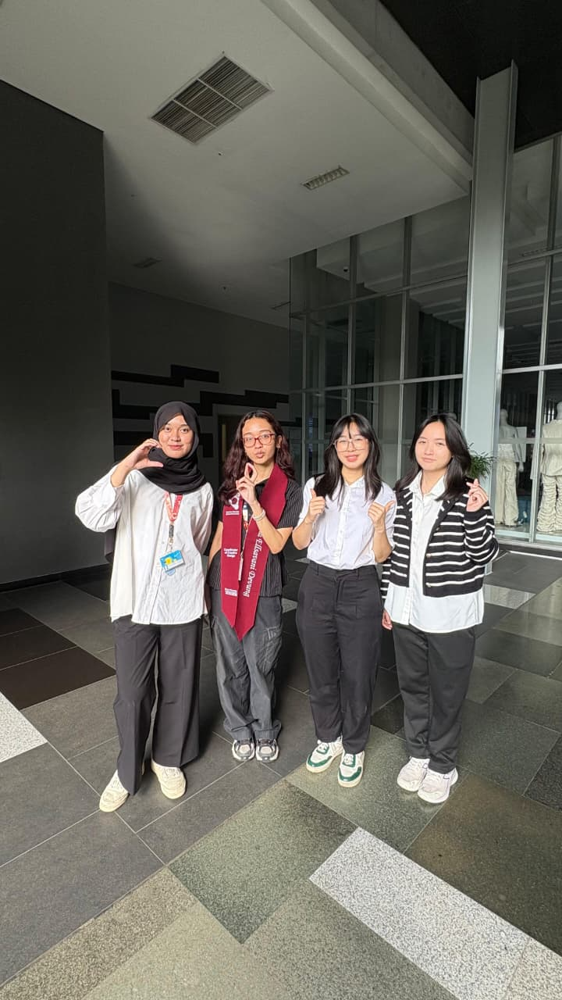
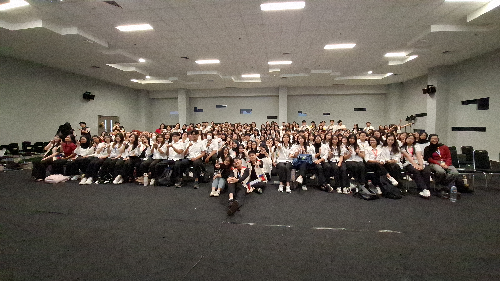
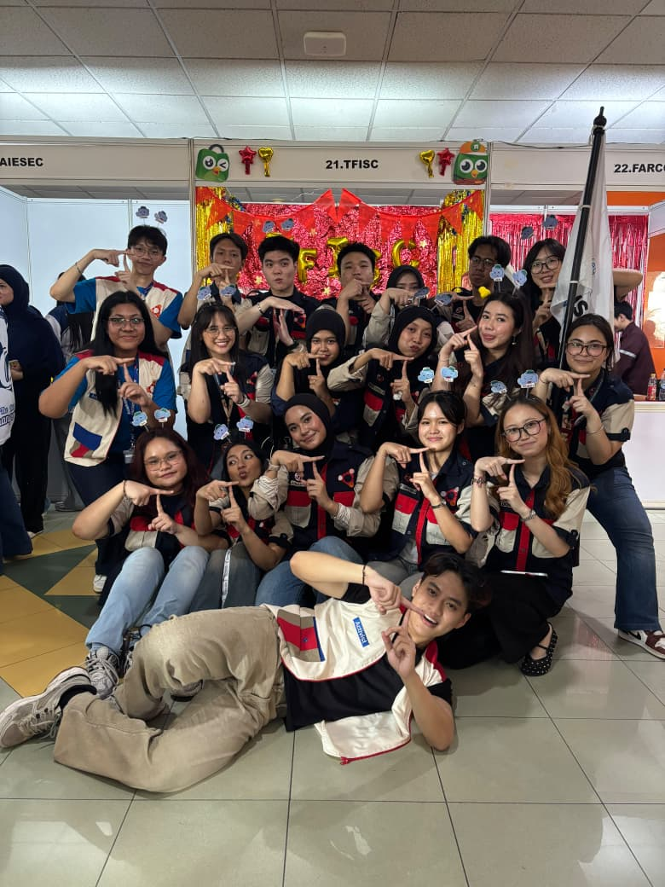
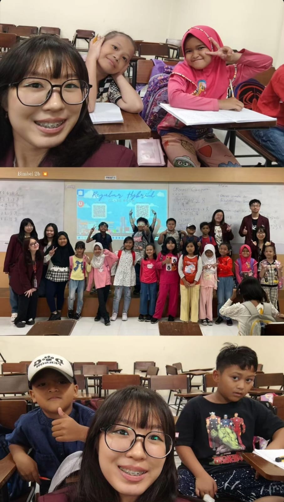
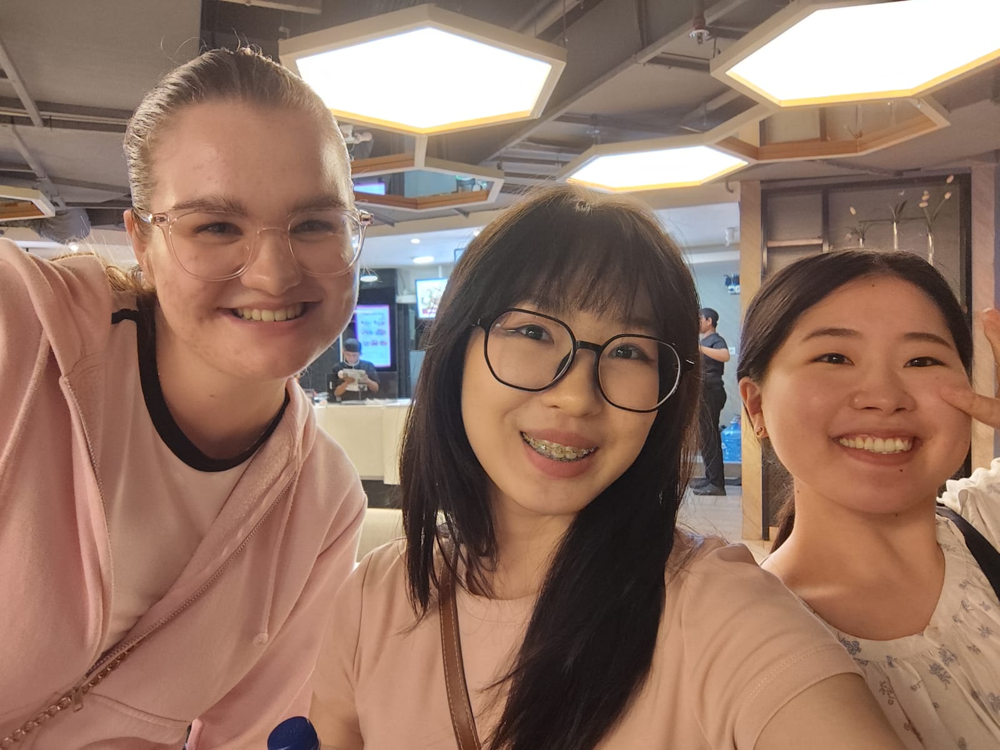

Turning raw data into meaningful insights.
5th-semester Data Science student at Binus University building ETL/CI-CD pipelines, machine learning models, and the occasional motion-graphic side project.

Education
B.Sc. Data Science
School of Computer Science, Binus University
Experience
Data Engineer
Binus University — IT Division
- Researched CI/CD architecture and wrote a comprehensive DevOps report for ETL pipelines on BINUS IT infrastructure, standardizing automation & deployment guidelines.
- Delivered 8+ Data Engineer tickets building ETL pipelines for timely, accurate data integration.
- Ran daily monitoring to keep all data pipelines reliable.
- Enhanced 130+ pipelines, converting
SELECT *into explicit column selects while verifying joins, types and row/column counts stayed correct.
Admin / Sales
MyClinicalPro
- Coordinated software demo presentations and strategic discussions with prospective clinic clients.
- Prepared Minutes of Meeting documenting negotiation outcomes and follow-up actions.
- Ran B2B outreach to 150+ clinic prospects in Jabodetabek using a database built via Python/Playwright scraping on Google Maps.
Volunteering & Organization
TFISC — Teach For Indonesia Student Community
- Created monthly "Upcoming Events" designs and ran QC on TFISC's main account publications, @tfistudentcommunity.
- Led and mentored the Creative Design team, including the anniversary video and Benchmarking event.
- Produced an AI-assisted motion-graphic bumper video featuring the Taffy mascot for the main program.
- Served as PIC for LDK-A, managing a 1,000+ participant event.
- Creative Design coordinator, Benchmarking event
- Logistics & equipment team, Expo B30
- Taught math to 2nd-grade tutoring students, weekly for 5 weeks
- Taught literacy to elementary school children, 5-day program
IBUDDY+
- Guided and assisted 80 international students visiting Binus University.
- Emceed 8+ international seminars in English, 50+ participants each.
// A FEW MOMENTS FROM THE FIELD





Projects
Emotion Prediction NLP
BERT-based model predicting emotion from text, plus an Autoencoder for dimensionality reduction.
Underwater Image Enhancement
Combines brightness adjustment with a GAN to restore clarity and true color in low-light underwater images, aimed at real-time use.
Social Media vs. Productivity
End-to-end study (cleaning → linear regression) on social media usage and student productivity.
ML Model Deployment
Full ML lifecycle including deployment to production via a local API and AWS.
Emotion Journaling App
System design (UML, ERD, flowchart) for an app helping people better recognize their own emotions.
Toddler Speech Therapy App
UI/UX for a student notes site and a toddler speech-therapy app addressing unsupervised screen time.
Skills & Toolkit
GROUP_01: PROGRAMMING
GROUP_02: DATA & MACHINE LEARNING
GROUP_03: DATABASES & TOOLS
GROUP_04: DESIGN & LANGUAGES
Get In Touch
Let's build something great
Have an opening for a Data Engineer / Data Analyst / Data Science role / Any role related to data, or just want to talk pipelines and models? Reach out directly.
> cheryleugene7@gmail.com↗ > linkedin.com/in/cheryl-eugene-saari↗ > github.com/cheryleugene88↗ > +62 878-0417-3870↗